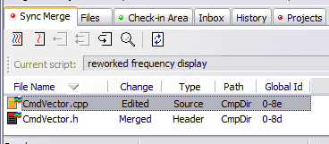

The Sync Merge tab appears dynamically after an incoming script is executed and it affects at least one file that you already have checked out and edited. Code Co-op attempts to automatically perform the merges. In some cases a merge conflict is detected and the file state is c marked as conflict.
The sync merge tab enables you to examine and modify the results of the merge. Double-clicking on a file will open the merger to show you the script changes and your local changes.

Although in general reviewing merge results is optional, if there are any files with the conflict status, they must be reviewed and the conflicts resolved, otherwise you won't be able to accept the sync, and the Sync Merge area will remain open.
Script comment is displayed in the toolbar. You can expand it by clicking the down arrow to the right of it.
After you've reviewed the merge, you can choose to: